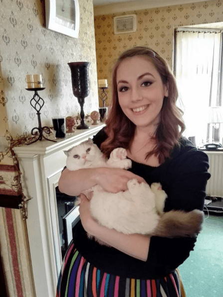

< < < Back
29-Year-Old Feminist Demands Government Money For Her Own Sterilization – Return Of Kings
A British feminist has been whining to high heaven because doctors on the NHS are unwilling to sterilise her on the taxpayer’s dime. Holly Brockwell, 29 (pictured), is now complaining to every media outlet that will listen that she never wants to have children, and that doctors refusing to seal up her fallopian tubes is discrimination.
Brockwell’s case signals a new plateau in the depravity of modern feminism: women demanding state-funded mutilation of their reproductive systems as a human right. This confused character writes as follows:
Since I’ve never wanted children and firmly believe I never will, the clear solution to me is sterilisation, which these days is a relatively quick procedure under local anaesthetic.
That recent trip to my GP is not the first time I’ve asked. In fact, I’ve made the request to be sterilised every year since I was 26 — I’m now 29 — and have been refused every time.
I can’t even get a referral. The response is always: ‘You’re far too young to take such a drastic decision.’
A woman who “does not want children” is at war with her own biology, and quite likely mentally ill. A woman who wants to have her reproductive system mutilated because less intrusive contraception is too inconvenient, is a danger to herself and ought to be sectioned under the Mental Health Act.
Holly Brockwell, a walking compendium of Red Pill truisms
She goes on:
The only way I can explain my attitude is that when I imagine all those beautiful moments everyone talks about — holding a new baby in my arms, my child’s first day at school, teaching them about the world — I feel nothing but a strong sense of ‘no thanks’.
This woman, if she can be called that, is repulsed by prospect of teaching a child about the world and guiding that child through important life experiences. The pendulum now sits squarely between “mentally ill” and simply “evil.”
I don’t think it helps that my mum never wanted children, and got talked into having them by my dad.
As a result, she’s never had any money or freedom, missed out on a lot of the things she wanted to do with her life, and feels trapped by choices she made decades ago. I don’t want that to happen to me.
Blaming men, of course.
I want my own life. I want a career, money, time and energy. I want to be Holly, not Mummy. I want to be able to travel and say ‘yes’ to opportunities without worrying about school catchment areas or baby-sitters.
What Brockwell wants is not only to ride the carousel, but to ride the carousel until the rivets pop out. She wants a career in a vapid corporate environment surrounded by square-jawed executives in the Don Draper mould. She wants to travel, she says, so she can say “yes” to opportunities to raw-dog local yardies on holiday in Jamaica.
Holly Brockwell, “finding herself”.
The AMA’s journal has linked promiscuity to an increased risk of cervical cancer, so for Brockwell, repeatedly saying “yes” to the “opportunities” she’s looking for might precipitate an extra bonus she won’t avoid through sterilisation. If the empowered femcunt doublespeak doesn’t convince you this woman is not the full shilling, this should:
I’ve given impassioned speeches like this to endless parents, but they just look at me sadly, as if I’m dead inside. How could I not want this tiny screaming demon that wakes them at 4am and breaks their favourite possessions? Why wouldn’t I want baby sick on my clothes or years of teenage tantrums?
A child is a “tiny screaming demon.” They are looking at her sadly, like she’s dead inside, because that’s exactly what she is.
Why Holly Brockwell is “working in tech journalism” and not a doctor
Brockwell wastes no time in directing her narrative to “muh patriarchal oppression”:
I can’t help thinking part of the NHS’s reluctance is down to my gender. There is such a strong belief that all women want to be mothers that both male and female GPs seem to find it hard to believe me when I say ‘never’.
Unfortunately for a loon like Brockwell, who subscribes to a dogmatic and inflexible equality, GP’s will be skeptical of outliers like her because they have wisdom. This wisdom, gained through countless hours of empirical observation of real people, has taught them that the drive to have children is innate to human biology.
I pay my taxes, and the NHS offers this procedure, so why can’t I have it? Because GPs can’t seem to accept that a young woman might aspire to be more than a baby factory.
Brockwell writes that she first tried to get sterilised on the NHS at 26. The doctor at the time told her he couldn’t “in good conscience” commit her to hospital to have her reproductive system shut down because condoms are too much hassle for her to use. What Brockwell has not mentioned in any of her articles on the subject is the small matter of the Hippocratic Oath, which binds the conscience of all doctors in their medical practice.
The Oath is long and detailed, having undergone many revisions since the time of Hippocrates (460 – 370 BC), the Greek physician who authored it, but the essence is the following:
I will use treatments for the benefit of the ill in accordance with my ability and my judgment, but from what is to their harm and injustice I will keep them.
Brockwell’s demand will not sit well with a medic’s conscience, since, firstly, a healthy woman who is able to reproduce can in no way be considered “ill.” Secondly, it is easy to see how blocking or sealing a woman’s fallopian tubes, preventing a woman’s eggs from reaching sperm and becoming fertilised, might be considered a form of harm.
The straitjacket question
Hippocrates, the founding father of medical ethics. A little too “cis scum” for some.
It’s not too far fetched to think that a good and conscientious doctor, hearing the demented ramblings of Holly Brockwell, might take it upon himself to consider that Holly is in fact insane, and commit her to an institution for her own benefit. I would have gone with that view, but the following paragraph from Holly made me reconsider:
People consider me headstrong and driven – the phrase I hear over and over is “she knows what she wants” – yet in this one area, they don’t believe I’ll carry it through. And in my weaker moments, I worry that they’re right. That I’ll fall in love and capitulate, like my mother did, and live my life a slave to children I resent, my dreams in pieces beneath their tiny trainers. It terrifies me.
Holly Brockwell is not mentally ill. She is simply a modern, silly little girl who has bought into girl-power garbage a little too readily, and now considers being “child-free” is a valid life choice.
She does, however, worry that the not inconsiderable number of people telling her she’s wrong, might actually be right. That flicker of a conscience shows us that Brockwell is not insane. She is simply in the deepest depths of denial.
Read Next: 4 Signs That Show The Degeneracy Of London’s Women


{kind=link}
{kind=link}
{kind=link}
{kind=link}